① 照節次讀：每一節先讀說明、動手玩互動元件，預測結果再按按鈕驗證。 ② 對照講義：頁上 §徽章對應 cppds 章節；講義的完整程式收在各節的收合區，預期輸出放在收合區外，可以先猜輸出再展開程式對照。標「（補充）」的內容是講義以外的延伸說明，跳過不影響主線。 ③ 每節做 quiz：答錯就回到該節重讀，不要往下跳。 ④ 最後翻 關鍵詞彙卡（35 張）自測術語（中文為主、術語附英文），並用 REF 總覽區與重點回顧當速查表。標「官方選讀」的節屬 cppds 正文，但課程第一輪可略過。
圖（graph）可以用來描述許多現實世界的關係：道路系統、航班、網際網路連線、課程先修關係等等。把問題用圖表示出來之後，就可以套用標準的圖演算法，解決原本看似困難的問題。
key（名稱），也可以附帶 value 或 payload。形式上我們把圖寫成 $G = (V, E)$：$V$ 是頂點集合，$E$ 是邊的集合。每條邊是一個 tuple $(v, w)$，其中 $v, w \in V$；如果有權重就寫成 $(v, w, c)$。
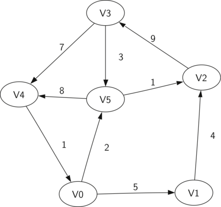
這張圖有六個頂點：
$$V = \{ v_0, v_1, v_2, v_3, v_4, v_5 \}$$
以及九條有權重的邊，每條邊寫成 (起點, 終點, 權重)：
$$E = \{ (v_0,v_1,5), (v_1,v_2,4), (v_2,v_3,9), (v_3,v_4,7), (v_4,v_0,1), (v_0,v_5,2), (v_5,v_4,8), (v_3,v_5,3), (v_5,v_2,1) \}$$
子圖（subgraph）是從 $E$ 取一部分邊、從 $V$ 取一部分頂點所組成的圖。
下面的互動圖就是同一張有向加權圖，按按鈕可以標出上面的路徑與循環。
Path 由邊串聯、互不相同的頂點序列 $w_1, w_2, \ldots, w_n$，每個相鄰對 $(w_i, w_{i+1}) \in E$。
Cycle 回到起點的封閉序列 $(w_1, \ldots, w_n, w_1)$，其中 $w_1, \ldots, w_n$ 互不相同。
DAG Directed Acyclic Graph：沒有 cycle 的有向圖；可解決許多排程／依賴問題。
Tree 連通且無 cycle 的無向圖；下一章專題討論。
後面的 BFS 與 DFS 會用「白／灰／黑」三種顏色記錄每個頂點被造訪到什麼程度，本頁的動畫也用同一套顏色：
每一節的動畫版面都是左邊「圖與控制列」、右邊「即時統計、程式與複雜度」。按 ▶ 開始 播放整段動畫，或按 → 單步 一步一步看。
頂點可以彼此相連，也可以孤立；邊連接兩個頂點，而且可以有權重。本課程的圖 ADT 提供下面這些操作：
Graph()：建立一張空圖。setVertex(key)：加入一個還不存在的頂點。key 已經存在時什麼都不做，原有的邊與走訪狀態都保留。addEdge(fromKey, toKey)：加入一條權重為 0 的有向邊；端點不存在時會自動建立。addEdge(fromKey, toKey, weight)：加入或更新一條有權重的有向邊。vertices.find(key) 或 vertices.count(key)：檢查某個 key 是否存在。vertices，就能逐一取得每組 key 與 Vertex。課程的標頭刻意把有序的 vertices（map<string, Vertex>）公開，所以查詢與走訪直接用標準 map 的操作。圖 ADT 有兩種常見的實作：相鄰矩陣與相鄰串列。
最簡單的實作是二維矩陣：每一列與每一欄各代表一個頂點，第 $v$ 列第 $w$ 欄的值表示從 $v$ 到 $w$ 有沒有邊。兩個頂點之間有邊時，稱它們相鄰（adjacent），格子裡存邊的權重。
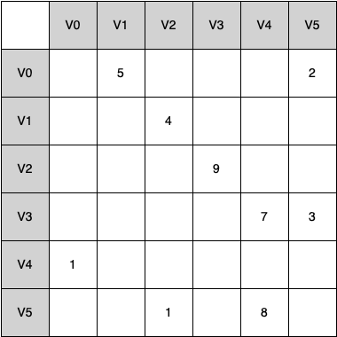
矩陣簡單，小圖也一眼就看得出誰跟誰相連；但上面這個矩陣大部分格子是空的，我們說它是稀疏（sparse）的，而矩陣不是儲存稀疏資料的好方法。每個頂點各佔一列一欄，要填滿矩陣需要 $|V|^2$ 條邊，所以邊數很多時矩陣才划算。實際問題很少連得這麼密，本章的問題全都是稀疏圖。
稀疏圖改用相鄰結構儲存。在本課程的 C++ 實作中，Graph::vertices 是 map<string, Vertex>，每個 Vertex::neighbors 是 map<string, int>：key 是鄰居，value 是邊的權重。
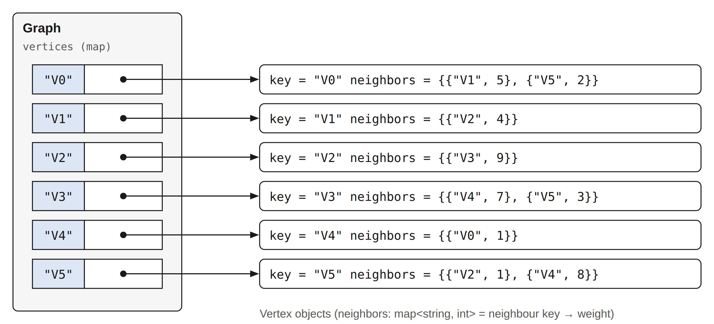
相鄰結構使用 $O(|V|+|E|)$ 的空間，列出頂點 $v$ 的所有鄰居需要 $O(\deg(v))$ 時間。我們用有序 map，所以查詢頂點要 $O(\log |V|)$、查詢某條邊要 $O(\log \deg(v))$；這兩個對數來自 std::map，不是圖 ADT 本身的要求。
關於圖的兩種實作方式，下列哪一個敘述正確？
點選頂點，看矩陣的哪一列、串列的哪一行對應到它的鄰居。
適合稠密圖（dense，邊數接近 $|V|^2$）。
✅ 直接 $O(1)$ 查詢任兩點是否相連
❌ 空間 $O(|V|^2)$
❌ 對稀疏圖極度浪費
適合稀疏圖（sparse，邊數遠小於 $|V|^2$）。
✅ 空間 $O(|V|+|E|)$
✅ 列出鄰居只需 $O(\deg(v))$
❌ 查特定邊是 $O(\log\deg(v))$，不是 $O(1)$
以 Word Ladder 為例：5,110 個字的矩陣有 26,112,100 格；實作儲存 53,286 筆有向的相鄰資料（26,643 組無向單字對），約占 0.20%。
講義先用兩個精簡的類別說明想法。每個 Vertex 用 map<string, int> neighbors 把鄰居的 key 對應到邊的權重：setNeighbor(other, weight) 加入或更新這組對應，getNeighbor(other) 在邊存在時取回權重，不存在時回傳 −1。
Graph 也用 map<string, Vertex> vertices 把頂點的 key 對應到 Vertex 物件。range-based for 迴圈走過的是 key／value 對；vertices.count(key) 檢查頂點是否存在。
本章的程式實際 #include 的是課程標頭 pythonds3/cppds/graph.hpp。標頭裡的 Vertex 沒有 getNeighbor／setNeighbor，程式直接讀寫公開的 neighbors；它另外多了 color、distance、previous 三個欄位，給後面的 BFS、DFS、Dijkstra 與 Prim 使用。distance 一開始是 INT_MAX，代表還沒從起點走到。
先建立編號 0 到 5 的六個頂點，再看 vertices 裡有什麼：每個 key 都對應一個 Vertex 物件。
Vertex(0) Vertex(1) Vertex(2) Vertex(3) Vertex(4) Vertex(5)
map 依 key 排序，所以頂點依 "0" 到 "5" 的順序印出。
接著加入連接頂點的邊，最後用兩層迴圈檢查每條邊都正確存好：
(0,1,5) (0,5,2) (1,2,4) (2,3,9) (3,4,7) (3,5,3) (4,0,1) (5,2,1) (5,4,8)
每組 (起點, 終點, 權重) 是一條有向邊，正好是開頭那張圖的九條邊。外層迴圈依頂點的 key 排序，內層依鄰居的 key 排序，所以 (5,2,1) 排在 (5,4,8) 前面。
先看一個叫 word ladder 的謎題：把 FOOL 變成 SAGE，每次只能改一個字母，而且每一步都必須是真正的英文單字，不能變成不存在的字。下面是一種解法：
這個謎題有很多變化，例如限定步數，或規定一定要經過某個單字。這一節要找的是：從起點單字變到終點單字，最少要幾步。做法分兩步：
第一個問題是把一大堆單字變成圖：兩個單字只差一個字母時，就在它們之間連一條邊。只要建得出這張圖，從一個單字到另一個單字的任何一條路徑，就是這個謎題的一個解。
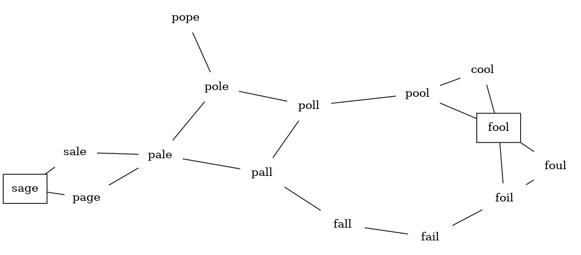
假設手上有一串長度相同的單字。先替每個單字建立一個頂點。要決定怎麼連邊，最直接的做法是把每個單字跟其他所有單字比較，數有幾個字母不同；只差一個字母就連一條邊。
單字不多時這樣做沒問題。但如果有 5,110 個四個字母的單字，拿每個單字跟其他所有單字比較，大約是 $O(n^2)$ 的演算法：5,110 個字要比較超過 2,600 萬次。
改用一些 bucket，每個 bucket 的標籤是一個把其中一個字母換成底線的四字母單字。處理單字時，用底線 _ 當萬用字元，把單字跟 bucket 標籤比對。每找到一個相符的 bucket，就把單字放進去，例如 POPE 與 POPS 都會進入 POP_。所有單字都放好之後，同一個 bucket 裡的單字一定兩兩相連。
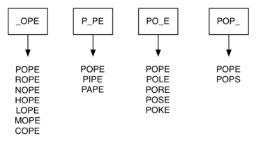
可重複使用的實作分成兩個標頭：pythonds3/cppds/graph.hpp 放資料結構，pythonds3/cppds/graph_algos.hpp 放演算法，buildGraph 就在後者裡面。bucket 用 map<string, set<string>> 存：萬用字元標籤是 map 的 key，對應的 set 存著符合這個樣式的所有單字。
word.substr(0, i) + "_" + word.substr(i + 1) 把第 i 個字母換成底線。5,110 個單字的相鄰矩陣會有 $5{,}110^2 = 26{,}112{,}100$ 格。buildGraph() 只存了 53,286 筆有向的相鄰資料（26,643 組無向的單字對），大約只佔那些格子的 0.20%，所以這張圖非常稀疏。
下面的互動圖已經用 bucket 法建好圖。選起點與終點，按「找最短路徑」就會執行下一節的 BFS。
單字集合：fool, cool, pool, poll, pole, pall, fall, fail, foil, foul, pope, pale, sale, sage, page。圖中只畫出 bucket 法產生的邊（同 bucket 內兩兩相連）；BFS 從起點往外擴散時會以橘色標記正在處理的頂點，綠色表示已被加入搜尋樹。
給定起點 $s$，廣度優先搜尋（Breadth-First Search）會找出圖中所有從 $s$ 可達的頂點。它最重要的性質是：會先找到所有距離 $s$ 為 $k$ 的頂點，才開始找距離 $k+1$ 的。所以 BFS 找到的就是「最少邊數路徑」（在無權圖上就是最短路徑）。
distance = INT_MAX（尚不可達）、空 previous；起點在 enqueue 前設為 gray 與 distance 0，避免被鄰居重複加入。
BFS 把每個頂點塗成白、灰、黑三種顏色之一。頂點建立時都是白色，代表還沒被發現；第一次被發現時塗成灰色；BFS 把它完全探索完之後塗成黑色。所以黑色頂點不會有白色的鄰居；灰色頂點則可能還有白色鄰居，表示還有頂點要探索。
下面的 bfs() 使用前面的相鄰串列表示法，另外用一個佇列（queue）決定下一個要探索的頂點。佇列是關鍵，原因馬上會看到。
BFS 用到 Vertex 類別的三個額外資料成員：distance、previous 與 color。它們是公開成員，演算法直接讀取與修改。標頭 graph_algos.hpp 裡的版本在開始前先把每個頂點重設為白色、距離 INT_MAX（還走不到）、沒有前一個頂點（空字串），然後把起點的 distance 設為 0，並且在放進佇列之前先把起點塗成灰色，再從 FIFO 佇列的前端一個一個取出來探索。
檢查相鄰串列上的每個頂點時，先看它的顏色。如果是白色，會做四件事：
neighbor 塗成灰色。neighbor 的前一個頂點設為目前的頂點 current。neighbor 的距離設為 current.distance + 1。neighbor 加到佇列尾端。它會排在所有已經在等待、屬於同一層或更早層的頂點之後。選一個起點按「開始」，觀察佇列的變化：距離 $k$ 的頂點全部出列之前，距離 $k+1$ 的頂點只會排在佇列後面等。右邊的程式會標出目前執行到哪一行。
從 fool 出發，把所有和 fool 相鄰的頂點加進佇列：pool、foil、foul、cool。這些都是接下來要展開的新頂點。
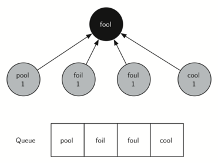
下一步，BFS 從佇列前端取出下一個頂點 pool，對它的每個鄰居重複同樣的處理。檢查到 cool 時，發現它已經是灰色：這表示有更短的路徑能到 cool，而且它已經在佇列裡等著被展開。所以檢查 pool 只新增了 poll。接著是 foil，它唯一能加入樹的新頂點是 fail；再往後的兩個頂點都沒有新增任何東西。
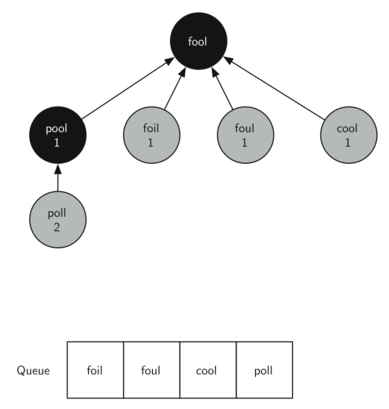
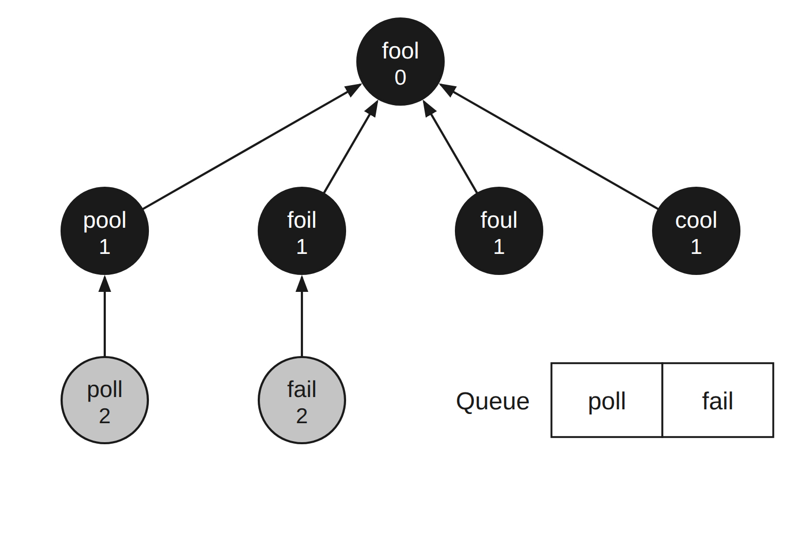
自己繼續往下追蹤，直到熟悉整個過程。下圖是所有頂點都處理完之後的 BFS 樹：
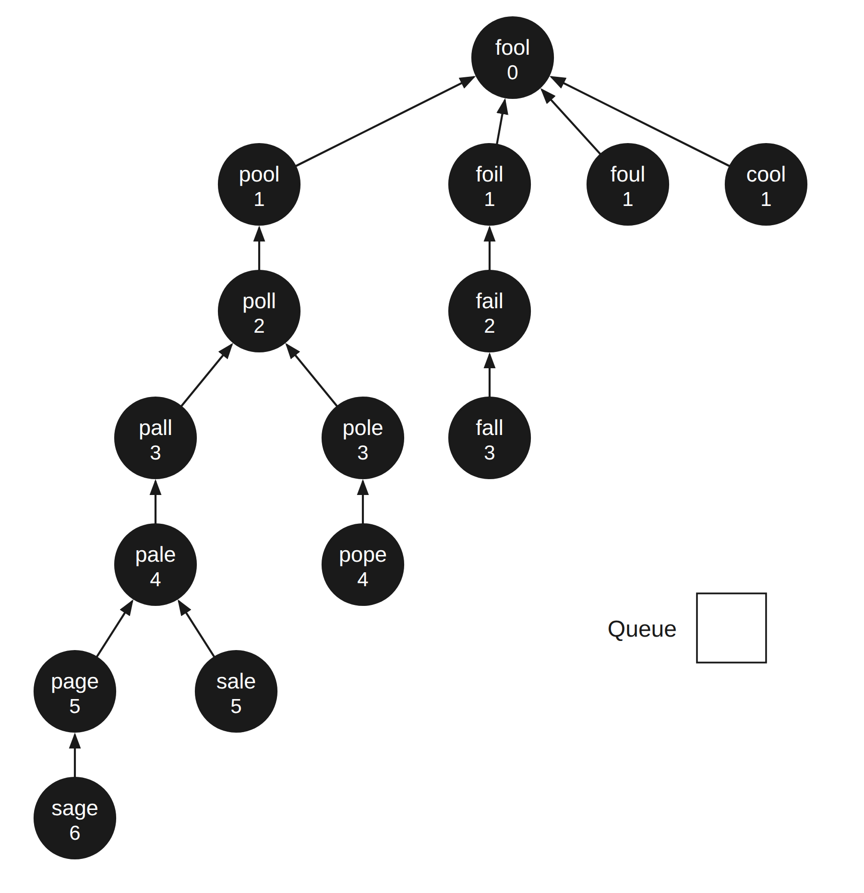
圖中的鄰居是依課本的順序畫的；C++ 的 neighbors 是 map，會依 key 的字母順序走訪（cool、foil、foul、pool），所以佇列的順序不同，但每個頂點的距離一樣。
跑完這次 BFS，除了一開始的 FOOL 到 SAGE，其他單字的問題也一起解決了：從 BFS 樹上任何一個頂點出發，沿著 previous 往回走到根，就是從那個單字回到 fool 最短的 word ladder。
sage->page->pale->pall->poll->pool->fool
BFS 樹裡 sage 的上一個是 page，所以印出 sage->page->pale->…；開頭列的解法經過 sale 與 pole，同樣是 6 步。距離 5 的 page 與 sale 都和 sage 相鄰，BFS 先從 page 發現 sage，就把 previous 設成 page。
同一次 BFS 也得到了每個單字和 fool 的距離：
cool(1) fail(2) fall(3) foil(1) fool(0) foul(1) page(5) pale(4) pall(3) pole(3) poll(2) pool(1) pope(4) sage(6) sale(5)
距離就是 BFS 樹的層數：cool、foil、foul、pool 在第 1 層，sage 在第 6 層。
先看 while 迴圈：每個頂點必須是白色才會被檢查並加進佇列，所以迴圈最多對每個頂點執行一次，也就是最多 $|V|$ 次，得到 $O(|V|)$。巢狀在裡面的 for 迴圈，對每條邊最多執行一次，最多 $|E|$ 次：每個頂點最多出列一次，而從 $u$ 到 $v$ 的邊只在 $u$ 出列時被檢查。這部分是 $O(|E|)$，兩個迴圈合起來是 $O(|V| + |E|)$。
BFS 只是工作的一部分。沿著 previous 從目標走回起點是另一部分，最壞的情況是整張圖是一條長鏈，要走過所有頂點，花 $O(|V|)$；一般情況只會走過 $|V|$ 的一部分。最後，至少在這個問題裡，還要加上建立整張圖的時間。
Select 2 Random Points），再按播放，就能看到 BFS 像水面漣漪一樣一圈一圈往外擴散，直到碰到終點。
網站的頂點是 OpenStreetMap 的路口、邊是路段，資料透過 Overpass API 即時抓取，和本頁的 Graph／Vertex 是同一套抽象。Unlock All Algorithms。
作者 Adam Kulikowski，改作自 honzaap/Pathfinding，MIT 授權；
原始碼。
另一個經典問題叫騎士巡遊（knight's tour），可以用來說明第二種常見的圖演算法。這個謎題在西洋棋盤上只用一個棋子：騎士。目標是找出一串走法，讓騎士每一格恰好走過一次，這樣的一串走法稱為一個 tour。8×8 棋盤上合法的 tour 數量上限已知約為 $10^{35}$，而走到死路的走法更多。
研究者提出過很多解騎士巡遊的演算法，其中圖搜尋最容易理解、也最容易寫。同樣分兩步：
用兩個想法把騎士巡遊表示成圖：棋盤的每一格是一個頂點，騎士的每一種合法走法是一條邊。
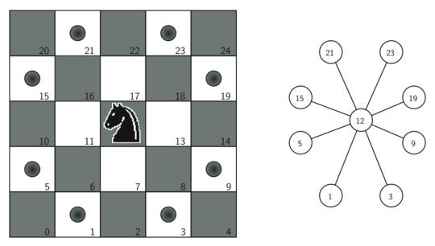
knightGraph() 把整個棋盤走一遍。在每一格呼叫 genLegalMoves() 產生合法的目的地座標，每一種合法走法就存成一筆有向的相鄰資料。棋盤上的位置 (row, col) 轉成線性的頂點編號 row * boardSize + col，再轉成字串當作 key。
genLegalMoves() 拿到騎士在棋盤上的位置，產生八種可能的走法，並確認每一種都還在棋盤裡：
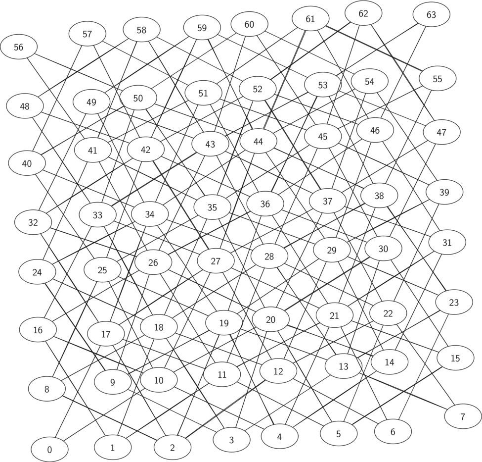
上圖是 8×8 棋盤上所有可能走法構成的完整圖，圖中正好有 336 條邊。注意棋盤邊緣的頂點，連線（合法走法）比中間的頂點少。8×8 的相鄰矩陣有 4,096 格；這個表示法存了 336 筆有向的相鄰資料（每一種無向的合法走法兩個方向各存一次），等於 168 條無向邊，所以矩陣只會用到 8.2% 的格子。
解騎士巡遊用的搜尋演算法叫做深度優先搜尋（depth-first search, DFS）。廣度優先搜尋一次建立一層搜尋樹（search tree）；深度優先搜尋則是沿著樹的一個分支盡量往深處探索。
我們會看兩種 DFS 的實作。第一種專門解騎士巡遊，明確禁止同一個頂點被走兩次。第二種比較一般，建樹時允許頂點被多次檢查，後面幾節的演算法都以第二種為基礎。
深度優先的探索方式適合這個問題：找一條經過 64 個頂點（每格一個）、63 條邊的路徑。DFS 走到死路（圖中沒有任何可走的下一步）時，會沿著樹往回退到最近一個還有合法走法的頂點。
knightTour() 有四個主要參數：n 是目前的深度；path 是 vector<string>，存已經走過的頂點 key；uKey 是正在探索的頂點；limit 是路徑要達到的深度。最後一個參數是圖本身。
這個函式是遞迴的。路徑達到要求的深度時回傳 true；否則找一個還沒走過的鄰居，往下一層遞迴，並回傳這個選擇最後能不能完成整個 tour。
DFS 同樣用顏色記錄哪些頂點走過：沒走過的是白色，走過的是灰色。如果某個頂點的所有鄰居都試過了，路徑卻還沒達到 64 個頂點，就是走到死路，必須回溯（backtrack）。遞迴呼叫回傳 false 時就會回溯：把 path 最後一個 key 移除，並把那個頂點塗回白色。遞迴的呼叫堆疊記住了哪些選擇還要重新考慮。
遞迴呼叫回傳 false 時，迴圈繼續試下一個白色鄰居；如果沒有任何鄰居能完成 tour，目前這次呼叫就把自己的頂點移出 path、塗回白色，然後回傳 false。
為了方便追蹤，假設走訪 neighbors map 的順序就是 key 的順序。呼叫 knightTour(1, path, "A", 6, g)，觀察遞迴的選擇與回溯。A 的鄰居是 B 和 D，依 map 的順序先試 B；B 先試 C，走到死路。
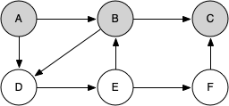
C 沒有白色鄰居，所以 C 的呼叫回傳 false，把 C 塗回白色，回到 B，再試下一個鄰居 D。之後搜尋要等所有必要的頂點都已經在 path 裡，才會再走到 C。這時 base case 的檢查成立，回傳 true，一路傳回每一層遞迴呼叫：
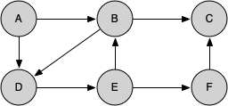
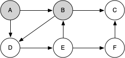
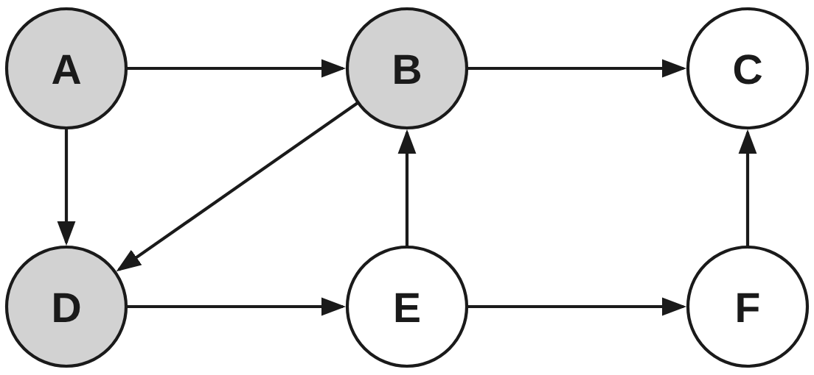
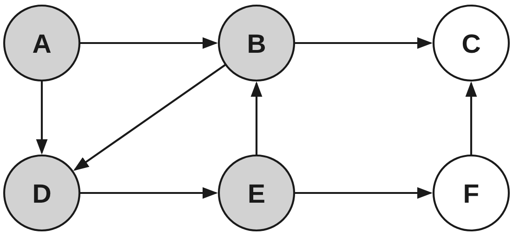
搜尋成功時，vector<string> path 的內容是 [A, B, D, E, F, C]，這就是每個頂點恰好走過一次的順序。
課程標頭另外提供 printBoard：不畫圖，而是把棋盤印成表格，每一格顯示騎士在第幾步走到這裡。0 是起點，5×5 的最後一步是 24，8×8 是 63。
0 5 14 11 20 15 10 19 6 13 4 1 12 21 18 9 16 23 2 7 24 3 8 17 22
從左上角 0 號格出發。沿著數字 0、1、2…… 找下去，每一步都是騎士的跳法，25 格各走過一次。
每個騎士圖的頂點也帶著 BFS／DFS 用的記錄（color、previous），騎士巡遊用 color 避免重複走同一格。8×8 的棋盤用這個單純的 DFS 就沒有希望了，下面說明原因，並用 Warnsdorff 啟發式解決。
knightTour() 對「下一個要走哪個頂點」的選法非常敏感。單純的 DFS 演算法是指數時間 $O(k^N)$，$N$ 是棋盤的格數，$k$ 是一個不大的常數。用一棵樹來理解：根代表搜尋的起點，演算法從這裡產生並檢查騎士所有可能的走法。可能的走法數取決於騎士在棋盤上的位置：角落只有兩種，角落旁邊三種，棋盤中間八種。
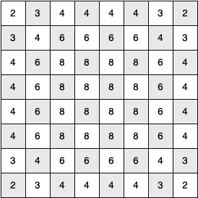
樹的下一層，同樣有 2 到 8 種可能的走法。要檢查的位置數，就是搜尋樹的節點數。
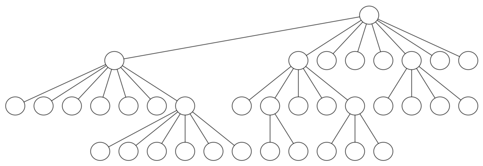
每個節點最多有八個子節點，節點總數很大。因為每個節點的分支數不同，可以用平均分支因子估計：節點數是 $\frac{k^{N+1}-1}{k-1}$，$k$ 是這個棋盤的平均分支因子，這個式子隨 $N$ 指數成長。
這個式子的量級約是 $k^N$。5×5 的棋盤深度是 25 層，平均分支因子 $k = 3.8$，$3.8^{25} \approx 3.12 \times 10^{14}$，搜尋樹的節點數就是這個量級。6×6 的棋盤 $k = 4.4$，$4.4^{36} \approx 1.5 \times 10^{23}$；一般 8×8 的棋盤 $k = 5.25$，$5.25^{64} \approx 1.2 \times 10^{46}$。
問題有很多解，所以不必探索每一個節點；但實際要探索的比例只是一個常數倍，搜尋量仍然是指數成長。
orderByAvail() 依每個候選鄰居「還剩幾個白色鄰居」排序，先試剩下走法最少的那一格。這就是 Warnsdorff 規則，它讓 8×8 的情況變得實際可行，但最壞情況仍然是指數時間。
也許你會覺得這樣反而不利：為什麼不選剩下走法最多的那一格？選走法最多的頂點，騎士會傾向在一開始就走進棋盤中間；之後很容易被困在棋盤的一側，到不了另一側還沒走過的格子。先走剩下走法最少的格子，騎士會先繞著邊緣走，先把難到的角落處理掉，中間的格子留到必要時再拿來跳到棋盤的另一邊。利用這類知識來加速演算法，稱為啟發式（heuristic），這一個啟發式叫做 Warnsdorff 演算法。
講義把 knightTour 的迴圈改成依 orderByAvail 的順序走訪鄰居；標頭裡這個版本另外取名為 knightTourWarnsdorff，兩個版本可以並存：
0 3 40 19 38 5 42 21 33 18 1 4 41 20 37 6 2 51 34 39 36 55 22 43 17 32 49 62 53 44 7 56 50 13 52 35 48 57 54 23 31 16 61 58 63 26 45 8 12 59 14 29 10 47 24 27 15 30 11 60 25 28 9 46
同樣從 0 號格出發，64 格全部走過，格子裡的數字是第幾步走到。四個角落分別在第 0、15、21、46 步走到，沒有一個留到最後；最後的 61、62、63 步都落在棋盤中間。走法少的邊角先處理，中間的格子留到後面，這就是 Warnsdorff 規則的效果。
選棋盤大小，切換「使用 Warnsdorff」再按「開始」，比較兩種排序要回溯幾次。動畫裡關閉 Warnsdorff 時，候選格依列、行順序由小到大嘗試。格子裡的數字是第幾步走到，起點是 0。
預設的 5×5 最適合比較：從 (0,0) 出發，Warnsdorff 一次都不用回溯，不用 Warnsdorff 則要回溯幾千次。6×6 以上不用 Warnsdorff 時，回溯次數動輒十幾萬次，動畫要播好幾個小時，甚至超過 80 萬步的上限而停止。奇數邊長的棋盤只提供 (r+c) 為偶數的起點：騎士每走一步就換一次格子顏色，7×7 有 25 個淺色格、24 個深色格，巡遊必須從淺色格出發、在淺色格結束，從深色格出發不可能走完。
騎士巡遊用深度優先的回溯，找一條走過每一格的簡單路徑。一般的 DFS 目標不同，也更簡單：它盡量往深處搜尋，探索每一個走得到的頂點，必要時才分岔，並記錄一棵深度優先樹；再從每個還是白色的頂點重新開始，就得到一片深度優先森林（depth-first forest），森林裡的樹可以有很多分支。
和 BFS 一樣，DFS 用 previous 連結建構搜尋樹。此外，DFS 替每個頂點記錄兩個時間，存在 DFSGraph 的成員 discovery 與 closing 裡：
看完演算法之後會發現，這兩個時間有一些很有用的性質，後面的演算法會用到。
dfs() 和遞迴的輔助函式 dfsVisit() 共用同一個計時器 time，所以它們是 DFSGraph 的成員函式；DFSGraph 繼承 Graph，再加上 time、discovery 與 closing。標頭裡的 dfs() 另外在開始時把 time 歸零並清空兩個 map，同一張圖重跑也會得到一樣的結果。
dfs() 先重設走訪狀態，再走過所有頂點，對每個還是白色的頂點呼叫 dfsVisit()，因此產生一片深度優先森林。要走過所有頂點，而不是只從一個指定的起點搜尋，是為了確保圖中每個頂點都被考慮到，沒有頂點被排除在森林之外。迴圈 for (auto& p : vertices) 走過圖自己的 vertices map：p.first 是頂點的 key，p.second 是 Vertex 物件。
dfsVisit(startKey) 把一個頂點塗成灰色，盡量往深處遞迴探索它的白色鄰居，最後才把它塗成黑色。dfsVisit() 和 bfs() 用的是同一個顏色檢查，決定性的差別在排程：DFS 遇到白色鄰居立刻遞迴下去，BFS 則把它放進佇列等之後處理。BFS 把待辦的工作存在明確的佇列裡，遞迴的 dfsVisit() 則隱含地使用 C++ 的呼叫堆疊。
按「開始」跑完整的 dfs()，觀察呼叫堆疊與兩個時間怎麼變化。
課程的 dfs() 一律依 key 的順序（A、B、C…）挑根，所以一定從 A 開始。這裡可以改選第一棵樹的根，看看森林會怎麼變；之後仍依 key 的順序，從還是白色的頂點挑下一個根。選 A 就和 dfs() 的結果相同。
for (auto& p : vertices) 確保每個白色頂點都會啟動一次 dfsVisit，最終得到一片深度優先森林（DF forest）。
vertQueue.push(n.first)：在 if 裡設好鄰居的 color、distance、previous，放進佇列，等以後處理。dfsVisit(n.first)：只設 previous，立刻遞迴下去；著色與計時在 dfsVisit 開頭做。下面的圖示範 DFS 在一張小圖上的執行過程。虛線代表檢查過、但另一端的頂點已經在深度優先樹裡的邊。搜尋從 A 開始，鄰居依字母順序造訪。A 的 discovery 是 1，接著 B 是 2、C 是 3；C 沒有鄰居，探索完畢，closing 是 4：
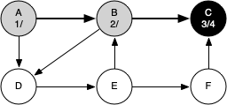
回到 B，B 剩下的鄰居只有 D，從 D 很快走到 E。E 的鄰居是 B 和 F，B 已經是灰色，走過去會繞圈，所以略過 B、改走 F。F 唯一的鄰居 C 已經是黑色，又到了一個分支的盡頭。之後演算法一路退回第一個頂點，沿途設定 closing 時間、把頂點塗黑：
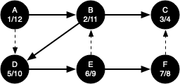
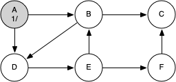
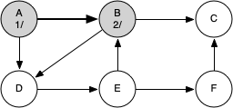
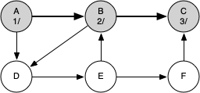
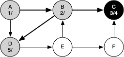
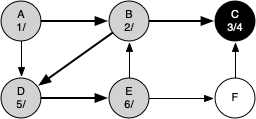
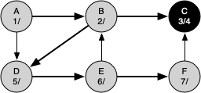
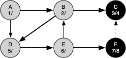
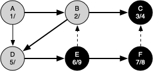
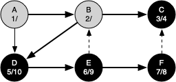
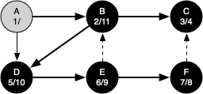
各頂點的 discovery 與 closing 時間呈現出括號性質（parenthesis property）：在深度優先樹裡，一個頂點的所有子孫，discovery 時間都比它晚、closing 時間都比它早。把 discovery 看成左括號、closing 看成右括號，任兩個頂點的區間要嘛一個包住另一個，要嘛完全不重疊。
Key| Discover| Closing| Previous A| 1| 12| B| 2| 11| A C| 3| 4| B D| 5| 10| B E| 6| 9| D F| 7| 8| E
每個頂點最後都是黑色。C 的 [3, 4] 包在 B 的 [2, 11] 裡，因為 C 是 B 的子孫；E→B 這條邊指向還是灰色的祖先 B，表示圖裡有循環。
不算遞迴裡掃描邊的時間，dfs() 的外層迴圈花 $O(|V|)$：重設時每個頂點走一次，建森林的迴圈也把每個頂點當成可能的根考慮一次。在 dfsVisit() 裡，每一筆有向的相鄰資料只會從它的起點被檢查一次，掃描鄰居的總時間是 $O(|E|)$。所以 DFS 的時間是 $O(|V|+|E|)$。
追蹤「下一個要探索的頂點」時，BFS 和 DFS 在結構上的主要差別是什麼？
這是 cppds 正文的章節，課程列為選讀（Optional），可以自學。
講義用煎鬆餅開場：食譜很簡單（1 顆蛋、1 杯鬆餅粉、1 匙油、3/4 杯牛奶）， 難的是先做哪一步。加熱煎鍋和打蛋都可以先做，但「倒麵糊」一定要等鍋熱了、糊攪好了。 把每個步驟當頂點、「必須先做」當有向邊，就得到一張 DAG（有向無循環圖）。 拓撲排序（topological sort）把一張 DAG 的頂點排成一個線性順序， 保證圖中每條邊 $(v, w)$ 的 $v$ 都排在 $w$ 前面。凡是「事件有先後依賴」的問題都用得上： 軟體專案排程、資料庫查詢最佳化、矩陣連乘的順序安排。
g.dfs()，目的是替每個頂點算出 closing time（結束時間）。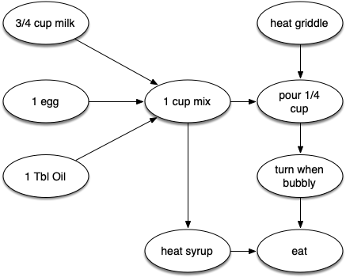
從圖上可以看到，可以先熱煎鍋，也可以先把任何一樣材料加進鬆餅粉。要決定每個步驟的確切順序，就用上面介紹的拓撲排序。
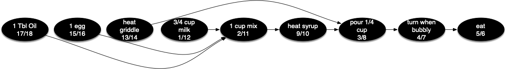
依 closing 時間由大到小排列，就得到上面那一列順序，每個步驟該在什麼時候做都確定了。
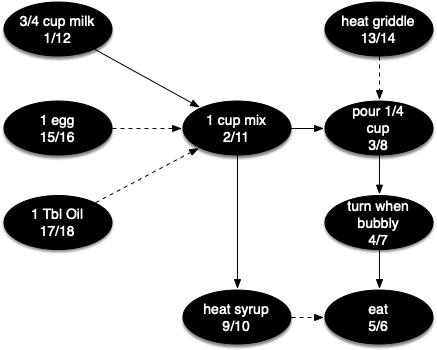
17/18 heat griddle 15/16 3/4 cup milk 13/14 1 egg 1/12 1 Tbl oil 2/11 1 cup mix 7/10 pour 1/4 cup 8/9 turn when bubbly 3/6 heat syrup 4/5 eat
每一行是「discovery/closing 步驟」。C++ 的 map 依 key 排序，dfs() 從 "1 Tbl oil" 開始，所以時間和上面的圖不同，順序也不同；但每條邊仍然從前面指向後面，同樣是合法的做法。拓撲排序通常不只一種。
對 DAG 跑完 DFS 後，依 closing time 遞減排序，為什麼保證每條邊 $(v,w)$ 的 $v$ 都排在 $w$ 前面？
這是 cppds 正文的章節，課程列為選讀（Optional），可以自學。
把全球資訊網當成一張超大的有向圖：網頁是頂點、超連結是邊。Google 這類搜尋引擎正是在這張圖上做演算法。 觀察這種圖會發現：內容相近的網站常常互相連來連去，形成高度互連的群集。 抓出這種群集的工具就是強連通元件演算法。 正式定義：SCC 是頂點的最大子集 $C \subseteq V$，使得其中任兩點 $v, w$ 都互相可達 （$v$ 到得了 $w$，$w$ 也到得了 $v$）。找到 SCC 之後，把每個 SCC 縮成一顆大點， 就得到一張簡化的「元件圖」，原圖的整體結構就容易看出來了。
dfs()，算每個頂點的 closing time。dfs()，但主迴圈依 closing time 遞減的順序挑起點。下圖是一張有三個強連通元件的簡單圖，不同深淺的區域就是不同的元件。
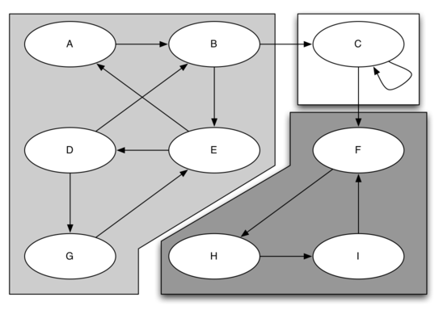
找出強連通元件之後，把同一個元件的頂點合併成一個大頂點，就能畫出簡化的圖。對這張圖照上面四個步驟走一遍：第一次 DFS 得到每個頂點的 closing 時間，第二次在轉置圖上依 closing 時間由大到小挑起點，最後得到三棵樹。
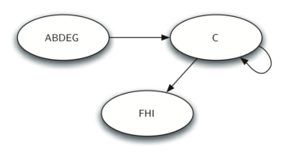
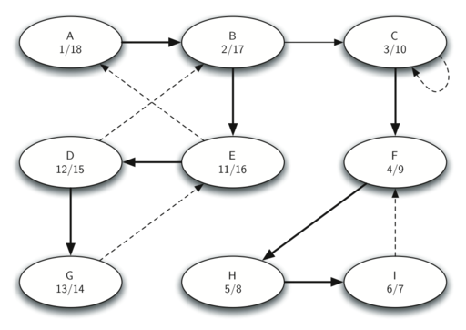
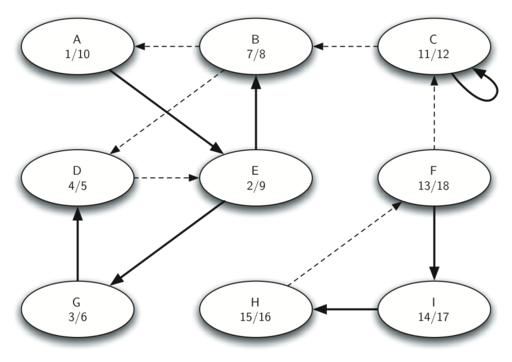
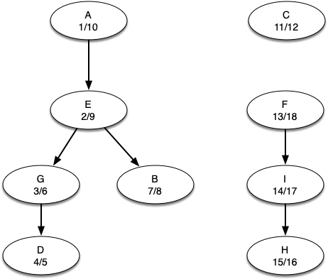
下方的互動圖用另一張八個頂點的圖走一遍同樣的四個步驟：按鈕 ① 是第一步，② 是第二步，③ 跑第三步的 DFS，長出的每一棵樹就是第四步的一個 SCC。
SCC 演算法的第二次 DFS 為什麼要（i）換到 $G^T$ 上跑、（ii）依 closing time 遞減挑起點？
上網、寄電子郵件，或從校園另一端登入實驗室的電腦時，背後有很多工作在把你電腦上的資料傳到另一台電腦。資訊在網際網路上怎麼流動，是計算機網路課程的主題。
上圖是網際網路通訊的高階概觀。用瀏覽器向伺服器要一個網頁時，請求必須經過區域網路，再透過路由器送上網際網路。網際網路上的每台路由器都連到一台或多台其他路由器。在一天中的不同時間執行 traceroute 指令，很可能看到資料在不同時間經過不同的路由器，因為每對路由器之間的連線都有成本，而成本取決於流量、時段等許多因素。
所以路由器組成的網路可以表示成一張加權圖。下圖是表示網際網路路由器連線的小例子。要解決的問題是：找出總權重最小的路徑，用來傳送任何一則訊息。
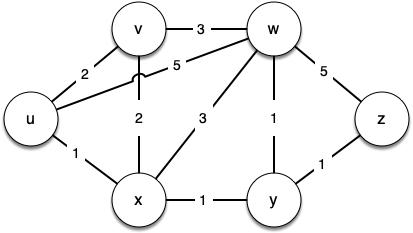
這個問題應該很眼熟：它和用 BFS 解的問題很像，只是這裡在乎的是路徑的總權重，而不是經過幾個路由器。如果所有權重都相同，兩個問題就是同一個。
為什麼在沒有權重的圖上，BFS 保證找到最短路徑？
Dijkstra 演算法是一個迭代的演算法，求出從某一個起點到圖中其他所有頂點的最短路徑，結果同樣和 BFS 很像。
為了記錄從起點到每個目的地的總成本，我們使用 Vertex 類別的 distance，它存著目前已知、從起點到這個頂點的最小總權重。演算法對圖中每個頂點各迭代一次，但迭代的順序由優先佇列（priority queue）控制，決定順序的值就是 distance。
優先佇列和佇列一樣，從前端取出項目；但項目在佇列裡的邏輯順序由優先權決定，優先權最高的在最前面、最低的在最後面。所以放進一個新項目時，它可能一路移到最前面。
頂點剛建立時，distance 設成一個非常大的數。理論上應該設成無限大，實務上只要設成比問題中任何真實距離都大的數，課程的標頭用的是 INT_MAX。C++ 用標準的 priority_queue 當作 min-heap：它存 (distance, key) 的 pair，加上 greater<> 之後，每次都先取出距離最小的那一筆。
邊權重可以是負數、但圖中沒有負循環時，可以改用 Bellman-Ford 演算法：它對所有邊重複做 |V| − 1 輪鬆弛，時間是 O(|V||E|)。如果第 |V| 輪還能讓某個距離變小，就表示圖中有負循環，最短路徑沒有定義。
newDistance 並比較、更新的那一段稱為邊鬆弛：對 $u$ 的每個鄰居 $v$，檢查是否可以透過 $u$ 走到 $v$ 比目前已知更近：
$$\text{new\_d} = d(u) + w(u,v),\quad \text{若 new\_d} < d(v)\text{，更新 } d(v) \text{ 並把 }u\text{ 設為 previous}.$$
本課程採 lazy priority queue：改善距離時直接 push 新 pair；舊 pair 出列時若距離較大就略過。最多 $O(|E|)$ 次 push/pop；簡單圖上 $\log|E|=O(\log|V|)$，總時間 $O((|V|+|E|)\log|V|)$。
u→v: 2 u→x: 1 u→y: 2 (經 x) u→w: 3 (經 y) u→z: 3 (經 y)
本課程的 C++ 實作使用 lazy 優先佇列。鬆弛（relaxation）讓某個距離變小時，直接推入一筆新的 (distance, key)，不去 heap 裡找舊的那一筆；之後舊的、比較大的那一筆到了最上面，演算法認出它已經過期，直接略過。
因此同一個頂點可能在優先佇列裡有好幾筆。每一筆都同時帶著暫定距離與頂點的 key，取出最小的那筆時，仍然知道要處理哪個頂點。取出 (queuedDistance, key) 之後，把 queuedDistance 和這個頂點目前存的距離比較；比較大就表示後來的鬆弛已經取代了這一筆，直接略過，不掃描它的相鄰 map。
這個版本沒有 changePriority()。每次成功的鬆弛只做一次 heap push，所以最多推入 $O(|E|)$ 筆，取出的次數也一樣。標頭裡的版本在一開始還會把每個頂點的距離重設為 INT_MAX，並檢查每條邊的權重：
從 $u$ 開始，distance = 0；其他頂點一開始都是 INT_MAX（還走不到）。鬆弛 $u$ 的每條邊，鄰居第一次得到有限的候選距離，並把 $u$ 記為前一個頂點：
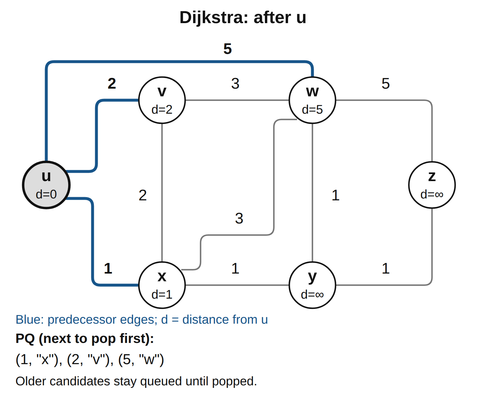
接下來 $x$ 的總成本最低，所以浮到優先佇列的最前面。取出 $x$ 時檢查它的鄰居 $u$、$v$、$w$、$y$：鬆弛讓 $y$ 第一次得到有限的距離，也讓 $w$ 的候選距離變小。lazy 佇列推入改善後的 pair；被取代的、比較大的那筆，之後到了最上面就被略過。下一步看 $v$ 的鄰居，圖沒有任何變化，於是換到 $y$。在 $y$ 發現到 $w$ 和 $z$ 都更便宜，就調整距離與 previous。最後檢查 $w$ 和 $z$，沒有新的變化；佇列裡只剩 $w$ 的兩筆過期項目 (4, w) 與 (5, w)，取出時一一略過，佇列空了，演算法結束。
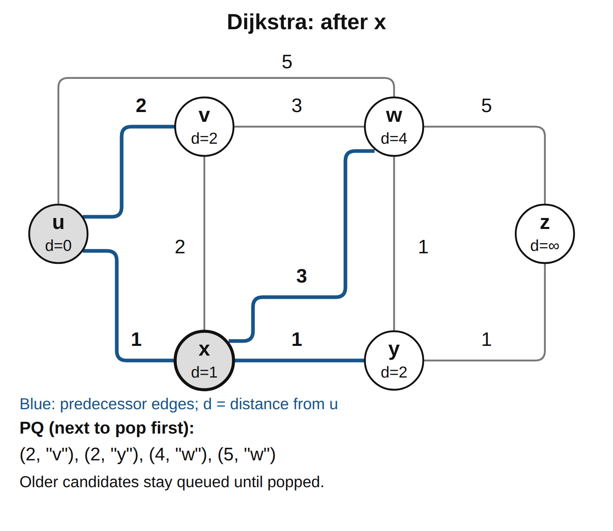
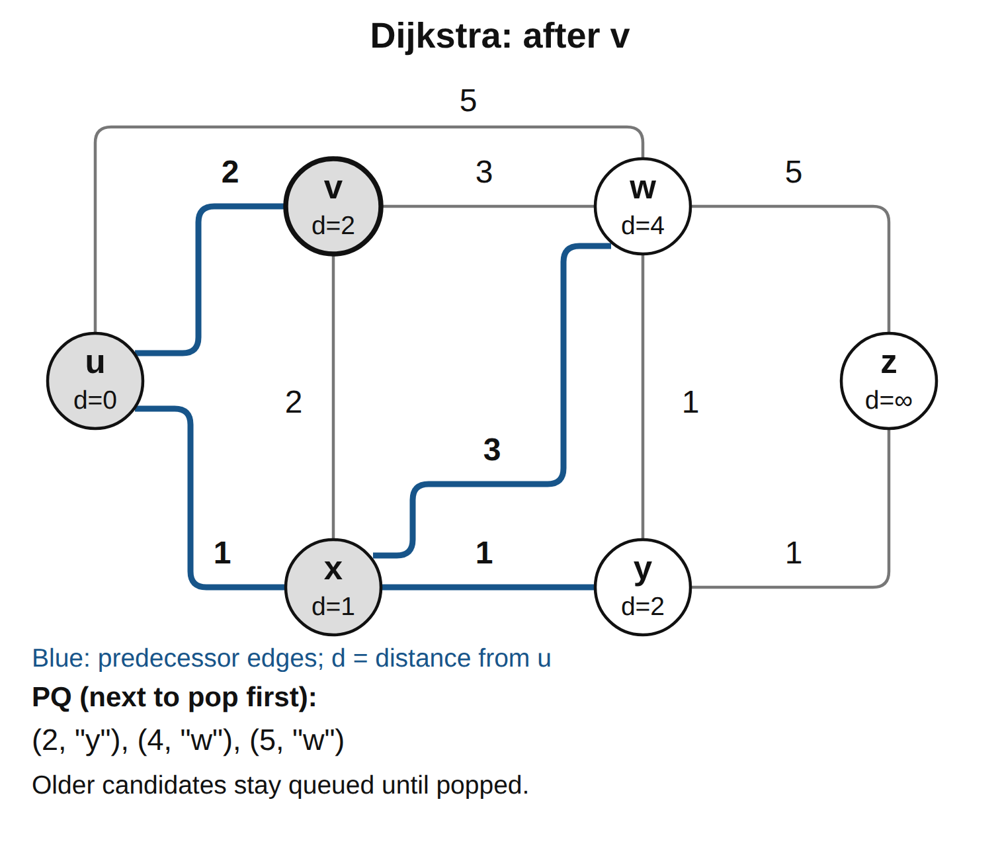
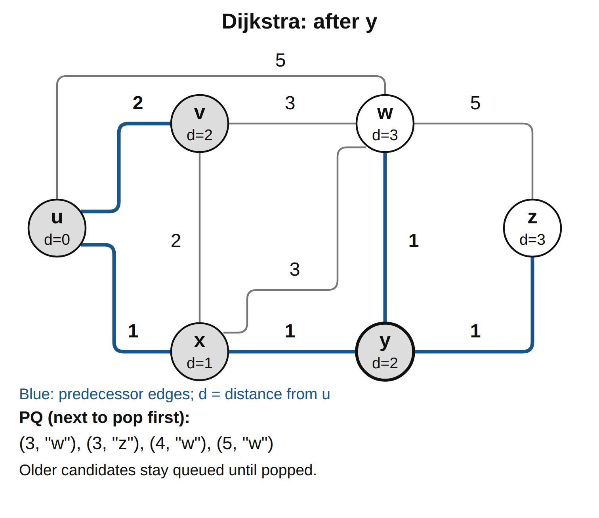
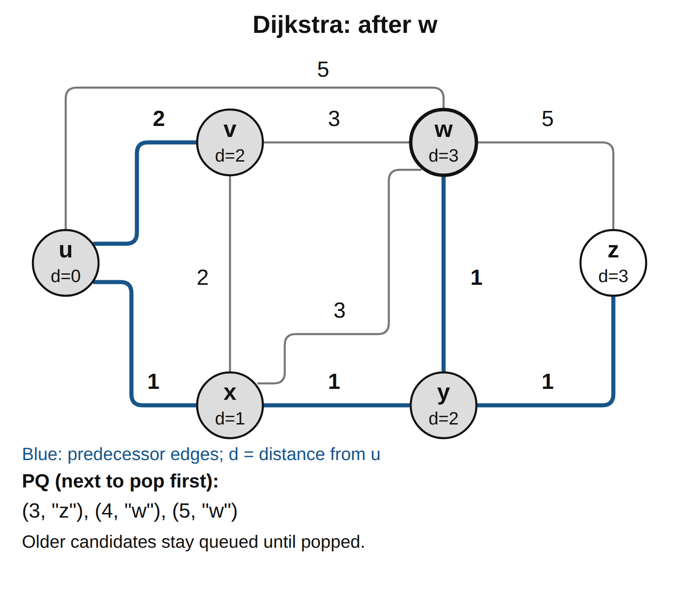
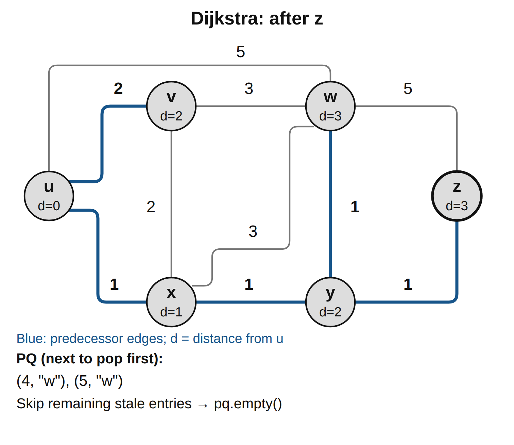
u: 0 () v: 2 (u) w: 3 (y) x: 1 (u) y: 2 (x) z: 3 (y)
格式是「頂點: 距離 (previous)」。w 的直達成本是 5，最後降到 3，走的是 u→x→y→w。
現在每個頂點都存著從 u 出發的最短路徑長度，沿 previous 往回走就能重建那條路徑。標頭的 findPath 做的就是這件事：從終點沿 previous 走回起點，再把結果反轉。
u x y z
u 到 z 的最短路徑經過 x 和 y，總長 1 + 1 + 1 = 3。
網際網路上實際傳送訊息時，用的是其他找最短路徑的演算法。在網際網路上用 Dijkstra 的一個問題是：演算法執行時需要整張圖的完整表示，也就是每台路由器都要有網際網路上所有路由器的完整地圖。實際上並非如此，其他變形的演算法讓每台路由器邊走邊認識這張圖。
在 lazy 的 C++ 實作中，重設所有頂點的距離花 $O(|V|)$，一開始只推入 (0, start)。掃描相鄰 map 時，每條有向邊只在有效的展開中被檢查一次。每次成功的鬆弛新增一筆 heap 項目，所以最多 $O(|E|)$ 次 push 與 pop。一次 heap 操作花 $O(\log |E|) = O(\log |V|)$（在這種簡單、沒有重複邊的圖上 $|E| \le |V|^2$），有序 map 查詢頂點也是同樣的對數。總時間是 $O((|V|+|E|)\log |V|)$，空間（含過期的項目）是 $O(|V|+|E|)$。
下列哪一個是 Dijkstra 演算法已知的限制或特性？
下圖有負權重的邊。把它傳給課程的 dijkstra(g, "A") 會發生什麼事？
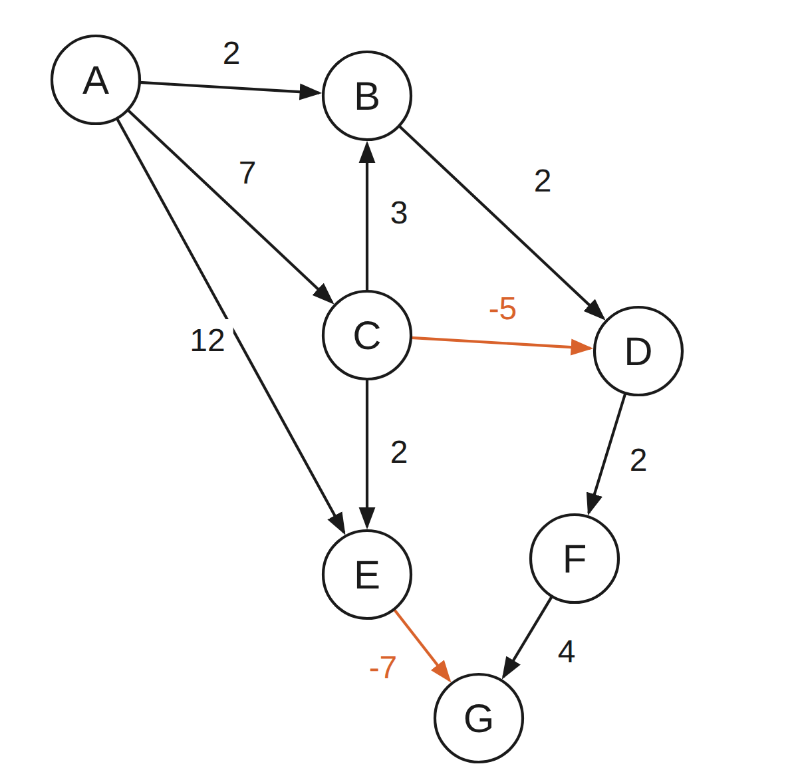
invalid_argument: Dijkstra requires non-negative edge weights
dijkstra 在重設距離的迴圈裡就看到 C→D 的權重 −5，丟出 invalid_argument，catch 印出例外的訊息。
最後一個圖演算法，來看線上遊戲設計者的一個問題：他們要有效率地把一則訊息傳給所有可能在收聽的人。這在遊戲裡很重要，所有玩家才知道其他玩家的最新位置。
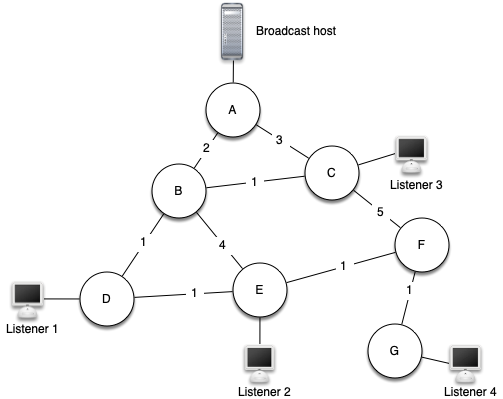
這個問題有幾種暴力解法。廣播主機有一份所有聽眾都要收到的資訊，最簡單的做法是主機記住所有聽眾，對每個人各送一份訊息。上圖是一個小網路，有一個廣播主機和幾位聽眾；用這個做法，每則訊息要送四份。假設都走成本最低的路徑，來看每台路由器會處理同一則訊息幾次。
廣播主機送出的訊息都經過路由器 A，所以 A 會看到每則訊息的全部四份。路由器 C 只看到一份，是給它的聽眾的。但 B 和 D 會看到三份，因為它們都在聽眾 1、2、4 的最便宜路徑上。廣播電台每秒要送出上百則訊息，這會多出很多流量。
另一種暴力解法是廣播主機只送出一份訊息，讓路由器自己處理。最簡單的做法叫做無控制氾濫（uncontrolled flooding）：每則訊息一開始帶有一個存活時間（time to live，TTL），設成大於或等於廣播主機到最遠聽眾之間的邊數。每台路由器收到訊息後，轉送給所有相鄰的路由器，轉送時把 TTL 減一。因為每台路由器都持續把訊息轉送給所有鄰居，直到 TTL 變成 0，不難相信這樣產生的多餘訊息比第一種做法還要多得多。
解決辦法是建立一棵最小權重的生成樹（spanning tree）。正式定義圖 $G = (V, E)$ 的最小生成樹 $T$：$T$ 是 $E$ 的一個無循環子集合，連接 $V$ 中所有頂點，而且 $T$ 中邊的權重總和最小。下圖是廣播圖的簡化版，標出了構成最小生成樹的邊。
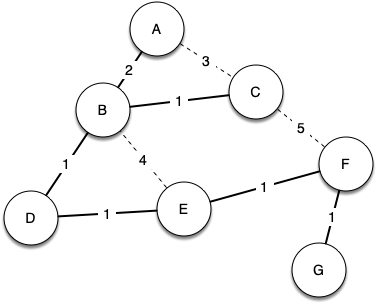
解決廣播問題時，廣播主機只要送一份訊息進網路。每台路由器把訊息轉給生成樹上的鄰居，但不轉回剛送訊息給它的那個鄰居。在這個例子裡，A 把訊息轉給 B，B 轉給 D 和 C，D 轉給 E，E 轉給 F，F 轉給 G。沒有任何路由器看到同一則訊息兩次，所有想收聽的聽眾都收到了。
Prim 演算法用在有權重的無向圖上，是一個貪婪演算法。每一步它都選一條安全邊（safe edge）：在「已經在樹裡的頂點」與「還在樹外的頂點」之間，跨過這條分界（cut）的最小權重邊。全圖其他地方最便宜的邊，不一定有資格被選。
關鍵在於找安全邊：在所有從目前的樹跨到樹外頂點的邊當中，Prim 選權重最小的一條。跨過分界的邊能保持連通又不會形成循環；cut 性質則保證這個最小權重的選擇可以屬於某一棵最小生成樹。
課程的 prim() 要求整張圖是一個連通元件、包含所有頂點。lazy 優先佇列清空之後，它比較加進樹裡的頂點數和 g.vertices.size()，圖不連通時就丟出 invalid_argument。
和 Dijkstra 比較：Prim 的 newDistance 只是一條邊的權重 n.second，不是從起點累加的路徑長度；另外用 inTree 記錄哪些頂點已經從佇列取出、正式進入樹中。
newD = u->distance + w(u,v)：累加從起點走到 v 的整條路徑權重。newD = w(u,v)：只看 u 到 v 的單一邊權。從 A 開始，其他頂點的 key 都初始化為無限大。看 A 的鄰居，B 和 C 經過 A 的成本小於無限大，所以更新它們的 key。這讓 B 和 C 移到優先佇列的前面，並把它們的 previous 設為 A。不過 B 和 C 還沒有正式加入生成樹：頂點要從優先佇列取出之後，才算是生成樹的一部分。
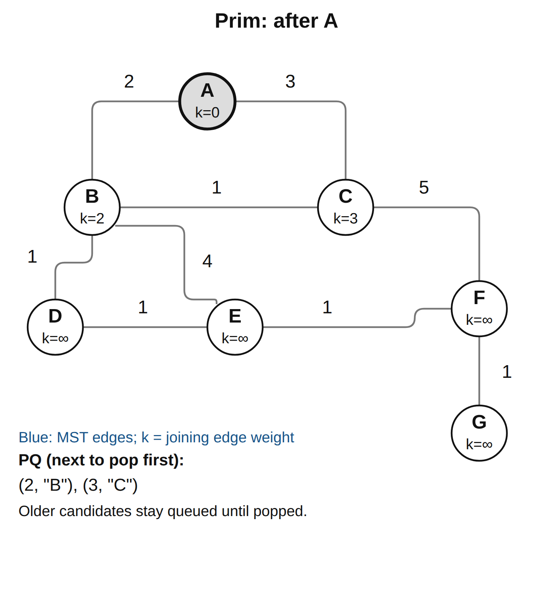
B 的距離最小，所以接著看 B。檢查 B 的鄰居，C、D、E 都可以更新：經 B 到 C 只要 1，比原本經 A 的 3 便宜；D 和 E 則是第一次得到距離。三者的 previous 都改指向 B。佇列裡的下一個是 C，C 的鄰居中還不在樹裡的只有 F，於是更新 F 的距離。接著檢查 D 的鄰居，發現 E 的距離可以從 4 降到 1，E 的 previous 改指向 D，準備接到生成樹的另一個位置。之後的過程就照這樣，把每個新頂點加進樹裡。
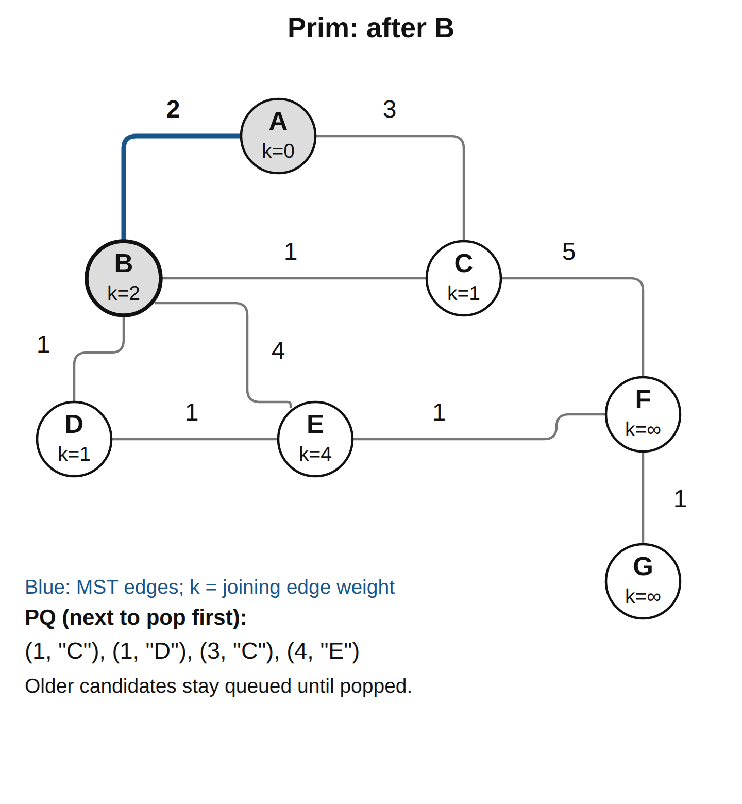
MST edges: (A,B) (B,C) (B,D) (D,E) (E,F) (F,G)
每一組是 (previous, 頂點)。印出的邊組成以 A 為根的最小生成樹，是反覆選擇「跨過目前樹邊界的最便宜邊」得到的，總權重 7。
結構和 lazy 的 Dijkstra 相同：每個頂點從佇列正式取出一次，每條有向邊在它的起點進樹時檢查一次，每次成功的更新推入一筆 heap 項目。總時間同樣是 O((|V| + |E|) log |V|)。
用 Prim 演算法建立最小生成樹時，「安全邊」是指什麼？
課程的 prim(g, start) 遇到不連通的圖時會怎麼做？
下面這張圖用 Prim 演算法、從頂點 F 出發，最後一條加入最小生成樹的邊，權重是多少？
| 步驟 | 取出 | 加入的邊 | key 的更新 |
|---|---|---|---|
| 1 | F（起點） | — | A = 8、E = 9 |
| 2 | A | F–A (8) | B = 1、G = 2 |
| 3 | B | A–B (1) | C = 7 |
| 4 | G | A–G (2) | C 由 7 降為 5、E 由 9 降為 3 |
| 5 | E | G–E (3) | D = 4 |
| 6 | D | E–D (4) | D–C 的 6 不比 5 小，不更新 |
| 7 | C | G–C (5) | — |
最小生成樹的總權重是 8 + 1 + 2 + 3 + 4 + 5 = 23。原因是 Prim 的更新規則只看單一條邊的權重：G 進樹時，C 改由 G–C（5）連進來，比原本的 B–C（7）便宜。
| 演算法 | 解決問題 | 主要資料結構 | 時間複雜度 | 適用條件 |
|---|---|---|---|---|
| BFS | 無權最短路徑、連通性 | Queue | $O(|V|+|E|)$ | 有向／無向皆可 |
| DFS | 連通分量、拓撲排序、強連通 | Stack（遞迴） | $O(|V|+|E|)$ | 有向／無向皆可 |
| Knight's Tour（純 DFS） | Hamiltonian path（特例） | Stack（遞迴）+ backtrack | $O(k^N)$ | $N=$ 棋盤格數 |
| + Warnsdorff 啟發式 | 同上 | 同上 | 啟發式；最壞仍 $O(k^N)$ | 沒有理論保證 |
| Dijkstra | 單源加權最短路徑 | Min-heap PQ | $O((|V|{+}|E|)\log|V|)$ | 邊權必須非負 |
| Prim | 最小生成樹 | Min-heap PQ | $O((|V|{+}|E|)\log|V|)$ | 無向連通圖 |
| 面向 | BFS | DFS |
|---|---|---|
| 探索順序 | 按距離由近到遠，一層一層 | 沿一條分支走到底，再回退 |
| 資料結構 | FIFO 佇列 | LIFO 堆疊（遞迴的呼叫堆疊） |
| 最短路徑 | 沒有權重的圖直接得到 | 不保證 |
| 記憶體 | $O(|V|)$（最寬的一層） | $O(|V|)$（最深的路徑） |
| 典型應用 | 最少步數、分層結構 | 拓撲排序、強連通元件、偵測循環、回溯 |
| 產生的樹 | BFS 樹 | 深度優先森林（可能多棵樹） |
| 面向 | Dijkstra | Prim |
|---|---|---|
| 解決的問題 | 單一起點的最短路徑 | 最小生成樹 |
| 更新規則 | d(u) + w(u,v)，累加整條路徑 | w(u,v)，只看一條邊 |
| 結果的意義 | 每個頂點到起點的最短距離 | 連通所有頂點、總權重最小的邊集合 |
| 權重限制 | 不可為負 | 可以為負 |
| 有向／無向 | 都可以 | 無向圖 |
vertices 與 neighbors 兩層 map，空間 $O(|V|+|E|)$。DFSGraph）從每個白色頂點出發建立深度優先森林，記錄 discovery 與 closing 時間，兩者滿足括號性質。時間 $O(|V|+|E|)$。DFS 第一次碰到某個頂點時，走的是目前這條分支，可能繞了很遠；它不像 BFS 那樣先把近的頂點全部處理完。要找最少邊數的路徑用 BFS，邊有權重時用 Dijkstra。
Warnsdorff 只是改變嘗試的順序，讓搜尋通常很快找到解；遇到不幸的情況，回溯仍然可能非常多，最壞情況還是指數時間。啟發式加快的是常見情況，不改變最壞情況的保證。
不會。每一筆都帶著推入時的距離；取出時如果這個距離比頂點目前存的距離大，代表後來已經找到更短的路，這筆就是過期的，直接略過。只有和目前距離相同的那一筆會真正展開鄰居。
差在 newDistance 的算法。Dijkstra 用 d(u) + w(u, v)，每個頂點存的是到起點的總距離；Prim 只用 w(u, v)，每個頂點存的是把它接上樹的那條邊的權重。同一張圖，最短路徑樹和最小生成樹不一定相同。
每個選項都有解說：選錯也點開看看為什麼錯。全對之後再往下翻詞彙卡。
詞彙卡涵蓋本章的關鍵術語，正面是中文術語並附英文原名。先看正面術語，試著說出定義，再翻面核對；不熟的詞可以洗牌後再練習。